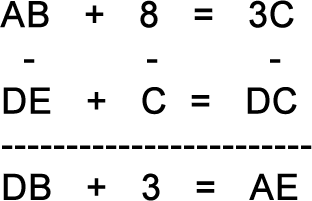

Decipher the puzzle shown in the diagram.


In the middle column, we write 8 - C = 3, hence C = 5. From the second line, we get E = 0. Now in the first line, we get that AB + 8 = 35, hence A = 2, B = 7. Then, from the first column we get D = 1, and the entire puzzle is decrypted.